SubGit Book. v2.0.2
Chapter 1. Overview
SubGit is a tool for bidirectional Subversion and Git repositories synchronization. SubGit is written in Java and works on the server side, i.e. requires direct access to both Subversion and Git repositories over local file system.
For creating a Git mirror of a remote Subversion repository, refer to SubGit Remote Book. This book only covers the case when SubGit is installed into existing Subversion repository.
Most commonly, SubGit user starts with Subversion repository being configured on the server. Access to Subversion repository is available over network (with HTTP(s), plain svn or svn over SSH protocols) and over the local file system. Correspondingly, users requests are handled by Apache Web Server, svnserve daemon or sshd daemon which invokes svnserve process. Figure 1.1 shows a generic outline of the described configuration.
Figure 1.1. Common Subversion Setup
SubGit creates one or more Git repositories alongside with the existing Subversion repository and translates existing Subversion revisions into Git commits. After that, SubGit configures Subversion and Git hook scripts so, that changes made in the Subversion repository are instantly translated into Git repository and vice versa. Figure 1.2 shows the server with SubGit being installed. SubGit grants users with a choice of using either Git or Subversion.
Figure 1.2. Server with SubGit installed 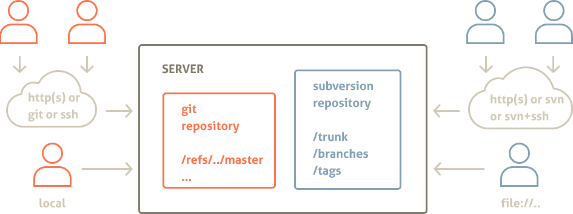
Chapter summary:
- SubGit needs direct access to Subversion repository over filesystem
- SubGit creates Git repositories and translates existing Subversion revisions into Git commits
- SubGit uses standard hooks mechanism to keep Subversion and Git repositories synchronized
- SubGit grants users with a choice of whether to use Git or Subversion
Chapter 2. SubGit Features
As a server-side application, SubGit
- Provides fast asynchronous replication that introduces minimal overhead
- Puts no limits on Git and Subversion users
- Fits well into existing server-side infrastructure
SubGit includes powerful translation engine, which would translate
- merge tracking information and merge history
- non-linear Git commits history to Subversion
- subprojects, tags and branches
- svn:ignore and .gitignore ignore definitions
- svn:eol-style and .gitattributes special properties
- symbolic links
- commit authors and dates
- files and directories renames
There are a few limitations on translation (see Chapter 8. Translation Limitations). These limitations only affects translation, and do not prevent Git and Subversion from being used to their full extents.
Chapter 3. Translation Configuration Overview
To synchronize Subversion and Git repositories, SubGit maps entities of one system to those of another. For every Subversion repository the following mappings are established and used by SubGit:
- Projects in Subversion repository are mapped to the Git repositories
- Each project branches and tags are mapped to Git branch and tag references
- Subversion users are mapped to Git committers
Above mappings are static and configured for Subversion repository once before translation and synchronization is started. All mappings are stored in subgit.conf configuration file. Following sections describe these mappings in more details.
Note:
Subversion is a very powerful system and sets mostly no limits on the repository layout. Hence, it may not be always possible to define necessary mappings for any project stored in Subversion repository found out there in the wild. Such unmappable projects would not be handled by SubGit. However, for most of the Subversion repositories in production use, mappings could be defined and, in most cases, they are detected automatically by SubGit.
3.1. Projects mapping
Subversion repository may contain one or more projects. Project is a location (folder) in Subversion repository which follows Subversion recommended repository layout, i.e. project folder has trunk, branches and tags subfolders:
/project
/trunk # project's "main line"
/branches # contains project feature and version branches, copied from trunk or other branches
/tags # contains project tags (trunk and branches snapshots)
It is not necessary for trunk, branches and tags folders to have these exact names, but the roles of these folders are important. Each project could be mapped to a bare Git repository as shown in Figure 3.1 and Figure 3.3 along with the corresponding parts of SubGit configuration file.
Figure 3.1. Single Project Repository Mapping
Figure 3.2. SubGit configuration file (single project mapping)
[git "default"]
# project location within Subversion repository
translationRoot = /
# file system path of the mapped Git repository
repository = .git
Figure 3.3. Multiple Projects Repository Mapping
Figure 3.4. SubGit configuration file (two projects mapping)
[git "project1"]
# project location within Subversion repository
translationRoot = /project1
# file system path of the mapped Git repository
repository = git/project1.git
...
[git "project2"]
# project location within Subversion repository
translationRoot = /project2
# file system path of the mapped Git repository
repository = git/project2.git
3.2. Branches and Tags mapping
For each project mapped to a Git repository, branches and tags are mapped to the corresponding references in the Git repository. SubGit distinguishes the following folders in Subversion project as branches or tags:
- trunk folder
- folders in the dedicated branches folder
- folders in the dedicated shelves folder
- folders in the dedicated tags folder
Shelves are special kind of branches used by SubGit to represent Git anonymous branches in Subversion repository.
Each folder is mapped to the reference (branch or tag) in the Git repository. For trunk folder the mapping is one-to-one as there could be only one trunk folder (as well as only one master reference in Git) and for other folders wildcard mapping is used. Default mapping and corresponding SubGit configuration file part is shown in Figure 3.5 and Figure 3.6.
Whenever project uses standard folder names (i.e. trunk, branches and tags), SubGit would automatically detect and configure mapping for that project. Otherwise configuration would have to be manually adjusted to include proper paths and references names.
Figure 3.5. Default Branches and Tags Mapping
Figure 3.6. SubGit configuration file (default branches and tags mapping)
[git "default"]
translationRoot = /
repository = .git
# branches and tags mapping in form of
# branchKind=Subversion-Path-Pattern:Git-Reference-Pattern
trunk = trunk:refs/heads/master
branches = branches/*:refs/heads/*
shelves = shelves/*:refs/shelves/*
tags = tags/*:refs/tags/*
Notice that project2 in Figure 3.3 features non-standard names for trunk, branches and tags folders. Figure 3.7 shows mapping configuration for that project.
Figure 3.7. SubGit configuration file (non-standard folders names)
[git "default"]
translationRoot = /
repository = .git
# branches and tags mapping in form of
# branchKind=Subversion-Path-Pattern:Git-Reference-Pattern
trunk = main:refs/heads/master
branches = versions/*:refs/heads/*
shelves = shelves/*:refs/shelves/*
tags = stamps/*:refs/tags/*
Figure 3.8 outlines combined project and branches mappings for two projects Subversion repository.
Figure 3.8. Project and Branches Mapping
3.3. Authors Mapping
By default there is no explicit authors mapping and the following rules are used for translation:
- Subversion "
svn\_user\_name" is translated to "svn\_user\_name <>" in Git - Git "
Author Name \<email@domain.com\>" is translated to "Author Name" in Subversion
Additionally to the default rule, explicit authors mapping may be provided by SubGit configuration. Authors mapping is stored in a separate text file which is looked at GIT\_REPOS/subgit/authors.txt by default. Mapping file is read in system default encoding.
Figure 3.9. GIT_REPOS/subgit/authors.txt file
svn_user_name = Git Name <name@email.com>
Default authors.txt location may be changed in SubGit configuration file.
Figure 3.10. SubGit configuration file defines authors.txt location
[core]
...
# location of the authors mapping file
authorsFile = subgit/authors.txt
...
Authors mapping file (authors.txt) contents may be altered at any time and new mapping becomes effective immediately.
Tip: Add author mappings for as many of you team members as possible, even if they don't use Git as the log history will be more consistent.
Chapter 4. Installing SubGit into Repository
4.1. Installation Stages
To translate Subversion repository to Git and enabled synchronization, SubGit have to be installed into Subversion repository. SubGit installation consists of three stages: automatic configuration detection, configuration adjustment and installation.
Figure 4.1. SubGit Installation Stages
At configuration stage SubGit detects projects and writes down mappings it has found. Then user has a chance to adjust generated configuration. At installation stage SubGit performs actual translation of existing Subversion revisions to Git commits and then turns instant synchronization on. Figure 4.1 schematically shows SubGit installation stages.
4.2. Setup Service Accounts
This section is only relevant for Linux and OS X users.
It is important to plan in advance what service would be used to access Git repositories and what to work with Subversion ones. Usually Subversion service is left intact and one have to configure Git service account so, that files created or modified on its behalf are readable and writable by Subversion service user and vice versa.
There are basically three possible cases in regards to the services and service accounts. All cases are shown in the diagrams below.
Figure 4.2. One service and single user account 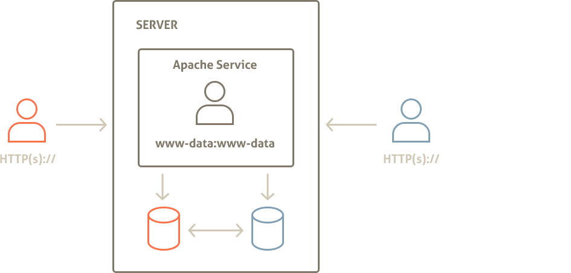
In the most convenient case the same service (Apache HTTP Server) would be used to access both Subversion and Git repositories. Apache HTTP Server user account then would be the only SubGit user (www-data:www-data) as shown in Figure 4.2. In this case no changes are needed.
Figure 4.3. Different services ran on behalf of the same user 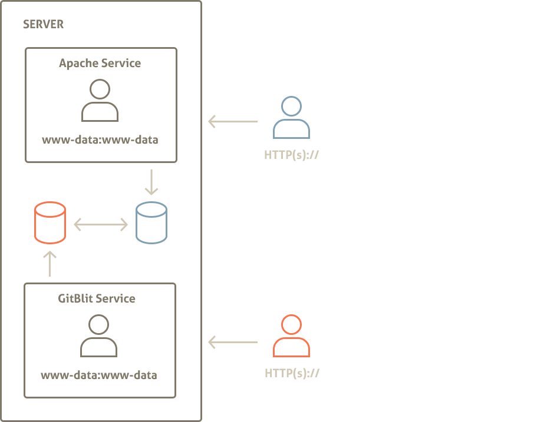
Different services may run on behalf of the same user account as in Figure 4.3. In this case there is still single SubGit user, www-data:www-data and no changes have to be made.
Figure 4.4. Different services ran on behalf of different users 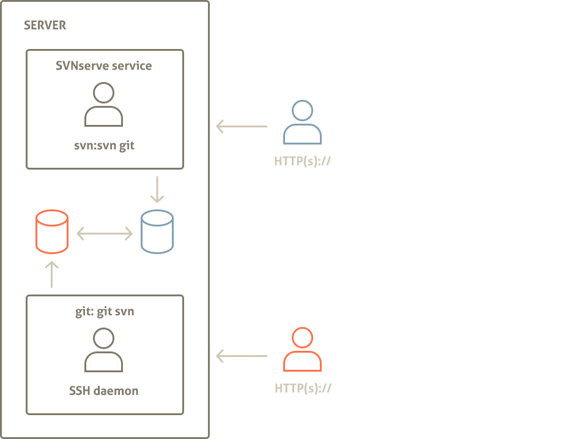
When different services would be used (e.g. SSH for Git and svnserve for Subversion) and ran on behalf of the different service accounts, then each service account must belong to all other accounts primary groups in addition to its own primary group, like it is shown in Figure 4.4 where svn:svn user also belongs to the git group and git:git user also belongs to the svn group.
For instance, in case of the three accounts, they would belong to the following groups:
- service1:service1, service2, service3
- service2:service2, service1, service3
- service3:service3, service1, service2
Following commands show how to add user to another account primary group:
$ sudo groups svn git
svn : svn
git : git
$ sudo usermod -G svn git
$ sudo usermod -G git svn
$ sudo groups svn git
svn : svn git
git : git svn
Alternatively, in Figure 4.4 scenario all accounts may share the same primary group.
To display and change user's primary group one may use the following commands:
$ sudo groups git svn
git : git
svn : svn
$ sudo usermod -g svn git
$ sudo groups git svn
git : svn
svn : svn
Service Accounts Summary:
It is important to ensure that all Subversion and Git repositories that are synchronized by SubGit are either:
- accessed by the same system user (e.g. www-data:www-data)
- accessed by the users who share each other primary group (e.g. svn:svn,git and git:git,svn)
- accessed by the users who share the same primary group (e.g. svn:svn and git:svn).
SubGit configuration that involves multiple user accounts is referred later in this guide as shared.
4.3. Run subgit configure
Run SubGit configure command to make SubGit detect projects in Subversion repository and generate initial SubGit configuration for them. One have to run configure command on behalf of the same user account that would be used to access Subversion or Git repository. Use sudo command on Linux or OS X or Administrator account on Windows if necessary. Examples below assume Ubuntu Linux and commands are ran on behalf of www-data user that runs Apache Web Server on that system.
When configure command is run on a repository with a single project one will get the following output:
$ [sudo -u www-data] subgit configure svn_repository
SubGit version 1.0.2 ('Miai') build #1730
Detecting paths eligible for translation... done.
Subversion to Git mapping has been configured:
<root> : /var/svn/svn_repository/.git
CONFIGURATION SUCCESSFUL
To complete SubGit installation do the following:
1) adjust SubGit configuration file, if necessary:
/var/svn/svn_repository/conf/subgit.conf
2) add custom authors mapping to the authors.txt file at:
/var/svn/svn_repository/conf/authors.txt
3) run SubGit 'install' command:
subgit install svn_repository
When SubGit configure is run on repository with two projects, mapping will be displayed for the both detected projects:
$ [sudo -u www-data] subgit configure svn_repository
SubGit version 1.0.2 ('Miai') build #1730
Detecting paths eligible for translation... done.
Subversion to Git mapping has been configured:
/project1 : /var/svn/svn_repository/git/project1.git
/project2 : /var/svn/svn_repository/git/project2.git
CONFIGURATION SUCCESSFUL
...
At configuration stage SubGit does not actually create Git repositories, but generates configuration file with the information on detected projects and mappings. Changes to Subversion repository made by the configure command are shown below:
svn_repository/
conf/
authors.txt # default authors mapping (empty)
authz
passwd
subgit.conf # projects mapping and general options
svnserve.conf
db/
hooks/
locks/
subgit/ # subgit binaries, logs and temporary directory
format
README.txt
4.4. Adjust configuration
SubGit configure command detects projects in Subversion repository and writes configuration and mappings to the SVN_REPOS/conf/subgit.conf file. Generated configuration have to be adjusted or extended when:
- different user accounts will be used to access Subversion and Git repositories (see Section 4.2);
- project in Subversion repository was not detected by subgit configure command.
subgit.conf file generated for a single-project Subversion repository will look like this (some of the less frequently used options are not shown here):
[core]
shared = false
authorsFile = conf/authors.txt
[git "default"]
translationRoot = /
repository = .git
pathEncoding = UTF-8
trunk = trunk:refs/heads/master
branches = branches/*:refs/heads/*
shelves = shelves/*:refs/shelves/*
tags = tags/*:refs/tags/*
minimalRevision = 0
Paths in subgit.conf file:
File system paths in subgit.conf file could be specified in relative or absolute form. Relative paths are those that do not start with '/' or drive letter on Windows OS. Relative paths are treated as relative to the Subversion repository root directory.
Enable shared access:
[core]
shared = true
Set core.shared option to true (default is false) if you plan Subversion and Git repositories to be accessed by different user accounts (see Section 4.2).
Provide authors mapping: Write Subversion users to Git authors mapping to conf/authors.txt file (see Section 3.3, “Authors Mapping”). For instance:
conf/authors.txt:
semen = Semen Vadishev <vadishev@tmatesoft.com>
dmitry = Dmitry Pavlenko <pavlenko@tmatesoft.com>
Or specify existing authors mapping file:
[core]
...
authorsFile = /var/git/company-authors-mapping.txt
Specify path to the authors mapping file (see Section 3.3) as core.authorsFile option value. Path is either relative to the Subversion repository root (e.g. conf/authors.txt expands to SVN_REPOS/conf/authors.txt) or absolute.
Adjust Git repository location:
[git "default"]
...
repository = /var/git/project.git
Specify path whether you would like Git repository to be created. By default, Git repositories are created within Subversion repository, at SVN_REPOS/.git in a single-project repository and at SVN_REPOS/git/project.git in a multi-project repository. This way allows one to copy or move Subversion and connected Git repositories with a single filesystem command. Change Git repository path to the one which fits your environment better.
Set path encoding to be used in Git repository:
[git "default"]
...
pathEncoding = UTF-8
Git stores paths as a sequence of bytes, without encoding specified. Usually paths ends up in Git as-is, i.e. in the local file system encoding. Use git.pathEncoding option to specify encoding to use when translating string path found in Subversion repository to Git. Most modern file systems use or could be configured to use UTF-8 encoding and this is default and recommended value.
Set revision to start translation from:
[git "default"]
...
minimalRevision = 1024
Set git.minimalRevision to Subversion revision from which translation should be started. Revisions older than specified would not be translated and would not be present in the Git repository. Limiting range of revisions with this option may reduce initial translation time.
Add projects that have not being detected automatically:
Some projects with non-standard layout may not be detected by SubGit (see Section 3.1, “Projects mapping” and Section 3.2, “Branches and Tags mapping”). In case it is possible to distinguish trunk, branches and tags directories for those projects one may add them manually to the configuration file. Consider the following layout for project and library project:
trunk/
project/
library/
branches/
project/
library/
tags/
project/
library/
Corresponding [git] sections should be added to subgit.conf file to enable translation and synchronizations of these projects:
[git "project"]
repository = /var/git/project.git
translationRoot = /
trunk = trunk/project:refs/heads/master
branches = branches/project/*:refs/heads/*
shelves = shelves/project/*:refs/shelves/*
tags = tags/project/*:refs/tags/*
[git "library"]
repository = /var/git/library.git
translationRoot = /
trunk = trunk/library:refs/heads/master
branches = branches/library/*:refs/heads/*
shelves = shelves/library/*:refs/shelves/*
tags = tags/library/*:refs/tags/*
Note that git.translationRoot options have similar value in both projects. This option specify a path relative to which branches and tags mapping paths are expanded.
One will find more options in the conf/subgit.conf file, as well as documentation on what these options control.
4.5. Run subgit install
Run SubGit install command to make SubGit create Git repositories, perform initial translation from Subversion to Git and to enable synchronization.One have to run configure command on behalf of the same user account that would be used to access Subversion or Git repository. Use sudo command on Linux or OS X or Administrator account on Windows if necessary. Examples below assume Ubuntu Linux and commands are ran on behalf of www-data user that runs Apache Web Server on that system.
install command uses configuration previously generated by configure command or perform configuration stage itself in case pregenerated configuration is not present. Subgit install command output when run on a single-project Subversion repository is shown below:
$ [sudo -u www-data] subgit install svn_repository
SubGit version 1.0.2 ('Miai') build #1730
Subversion to Git mapping has been found:
<root> : /var/svn/svn_repository/.git
Translating Subversion revisions to Git commits...
Subversion revisions translated: 20.
Total time: 10 seconds.
INSTALLATION SUCCESSFUL
Initial translation may take a while, however it would not affect Subversion repository - it remains fully functional during initial translation time.
SubGit install command creates Git repository and enables synchronization by installing hooks. Existing Subversion pre-commit and post-commit hooks are preserved and executed normally.
Figure 4.5. Repository after install command is completed
svn_repository/
.git/ # Git repository (bare)
branches/
hooks/
pre-receive # SubGit hook, do not edit or remove
user-pre-receive.sample # user's pre-receive hook template
post-receive # SubGit hook, do not edit or remove
user-post-receive.sample # user's post-receive hook template
logs/
objects/
refs/
svn/
config
HEAD
conf/
db/
hooks/
pre-commit # SubGit hook, do not edit or remove
user-pre-commit # user's pre-commit hook
post-commit # SubGit hook, do not edit or remove
user-post-commit # user's post-commit hook
locks/
subgit/
format
README.txt
As soon as install command reports successful termination, commits to Subversion repository will be immediately translated to the corresponding Git repository and vice versa - pushes to Git repository from its clones will be immediately translated to Subversion repository. With SubGit no special actions are required to maintain Subversion and Git repositories synchronized.
4.6. Recommended client-side Git configuration
Git users will clone Git repository on the server side to start working with the project locally. There are number of configuration options that is recommended to add to the clone's .git/config configuration file. These options are not required, but merely recommended for better user experience.
Fetch SubGit mapping information:
[remote "origin"]
...
fetch = +refs/svn/map:refs/notes/commits
refs/notes/commmits reference points to the so called notes that contains Subversion to Git mapping information for each commit. Note that this fetch line should be added as a new line and not appended to any existing fetch lines. With these notes fetched, git log command will show mapping information alongside with the commit message in the log output:
$ git log
commit bee5c8ae9bd8b2077f1acaedc9982ab4bd84d91b
Author: Alexander Kitaev <kitaev@tmatesoft.com>
Date: Thu Sep 6 18:58:01 2012 +0200
Ugly bug fixed
Notes:
r1 trunk
Fetch all tags:
[remote "origin"]
...
tagopts = '--tags'
--tags option will force Git to fetch all tags, even those unreachable from the current branch. These may be convenient in case user would like to see or check out tag set on the other branch.
Chapter 5. Changing SubGit Configuration
5.1. Writing Hooks
In order to enable synchronization of Subversion and Git repositories, SubGit installs hooks both into Subversion and Git repository that need to be synchronized. These hooks are:
- Subversion pre-commit hook
- Subversion post-commit hook
- Git pre-receive hook
- Git post-receive hook
Presence of these hooks is crucial for SubGit to function properly, and users should never modify or remove these hook scripts. If necessary, above hooks functionality should be placed into user-* scripts that would be called by SubGit at appropriate moments. SubGit install command takes care of already existing hooks and automatically places their contents into the corresponding user-* script files (see Figure 4.5, “Repository after install command is completed”).
Table below shows correspondence between standard hook scripts file names and file names that should be used to put hook functionality into after SubGit is installed. Hooks parameters and return code processing rules are not affected by SubGit. Hooks that are not listed in the table are not used by SubGit and their standard file names are not changed.
Subversion
standard hook name hook name after SubGit is installed
pre-commit user-pre-commit
post-commit user-post-commit
Git
standard hook name hook name after SubGit is installed
pre-receive user-pre-receive
post-receive user-post-receive
On Windows OS .cmd or .bat extension should be added to Subversion hook file names.
5.2. Applying configuration changes
SubGit configuration could be changed after SubGit is installed into repository. Some of the changes become effective immediately and others require subgit install or subgit install --rebuild command to be executed in order for the changes to be applied.
As with all other SubGit commands, subgit install command should be ran on behalf of the user that runs service that access Subversion or Git repository (see Section 4.2, “Setup Service Accounts”).
Changes that become effective immediately:
- Modification of the authors mapping file (conf/authors.txt)
- Modification or creation of the user-* hook scripts
Changes that become effective after 'subgit install' is run:
- Modification of the
core.authorsFileandcore.sharedoptions insubgit.conffile - Addition of the new
[git]section to thesubgit.conffile
subgit install command will validate changes made to the subgit.conf and apply these changes. If necessary, file permissions would be updated and new Git repositories would be created.
Note:
To remove existing[git]section, i.e. to disable synchronization of a selected project in Subversion repository, it is recommended to runsubgit uninstallfirst, then to remove[git]section and the to runsubgit installto apply changes. This way one would ensure that SubGit specific hooks are removed from the Git repository.
Changes that become effective after 'subgit install --rebuild' is run:
- Modification of the existing projects and branches mappings (any modifications within [git] sections of the subgit.conf file)
--rebuild option of the install command will make SubGit to back up existing Git repositories and to regenerate them using new mapping and translation options.
Chapter 6. Uninstalling SubGit
Run subgit uninstall command to disable synchronization or to uninstall SubGit completely.
Being run without options uninstall command removes SubGit hooks thus disabling translation:
$ [sudo -u www-data] subgit uninstall svn_repository
SubGit version 1.0.2 ('Miai') build #1730
SubGit hooks have been removed from Git repository:
/var/svn/svn_repository/.git
SubGit hooks have been removed from Subversion repository:
/var/svn/svn_repository
Subversion and Git are no longer kept in sync.
Until Subversion and Git histories diverge, you may run SubGit subgit install to enable synchronization back.
Run subgit uninstall command with the --purge option to remove SubGit completely. This command will remove:
- SubGit hooks (user hooks will be restored)
- SubGit binaries and log files
- SubGit metadata
Git repository will not be removed by the uninstall --purge command, but it will be no longer be kept in sync with the Subversion repository. To restore synchronization later one will have to run subgit configure command followed by subgit install --rebuild one just as in case of the fresh install (see Section 4.1, “Installation Stages”).
Chapter 7. Registering SubGit
You may use SubGit for evaluation purposes without a registration as long as you like. During that evaluation period SubGit will remind you on a necessity of registration with the help of post commit and post receive messages. For production use registration is required.
Obtain registration key:
SubGit registration key is a file with a contents like:
Purchase ID: CM-123456
Name: Company <company@email.com>
Committers per repository: 10
Repositories: 10
Supported versions: 1.*.*
pjCssAR6cT4F3MnEDb0qKiEcb15UWlPBQwvrZCMlBmbihHrXVnZ2MyJKsUT
...
sSPIOdt1sz1@6d6PXEzybYJq1DOaZfXWzogM3jpB4M1hBA1LRJBbOE1qVWH
Registration key could be obtained at SubGit registration page. Key file will be send to you by email.
Upload key:
Upload key you have received to the server where your Subversion repository is located. You may upload the file, or copy and paste key file contents to the file on the server side.
Register SubGit:
Run subgit register command to register repository. This command have to be ran on behalf of the user who has write access to the /etc directory on Linux or OS X or to the system APP_DATA directory on Windows. This usually would be root user on Linux and OS X and user with Administrator privileges on Windows.
Unless key file location is specified on the command line with the --key option, SubGit looks for the key file at the following locations:
- SVN_REPOSITORY/subgit/subgit.key
- USER_HOME/.subgit/subgit.key
SubGit register command provides some information on the key limits and on how many repositories could be registered with it:
$ sudo subgit register --key subgit.key svn_repository
SubGit version 1.0.2 ('Miai') build #1730
Registration information:
Registered for: Company <company@email.com>
Purchase ID: CM-123456
Committers Limit: 10
This key has been used to register 1 repository;
You may use this key to register 9 more repositories (out of 10).
REGISTRATION SUCCESSFUL
On UNIX-like operating systems: In order for subgit to inherit the correct java environment you may need to run the sudo with the -E option. See man sudo for details.
Chapter 8. Translation Limitations
Subversion and Git version control systems solves the same problem, that is why Subversion and Git repositories synchronization is possible. However, Subversion and Git implementation differs and that is why there are number of entities in both VCS worlds that are not translated. Still these entities are fully functional for that VCS users, for instance while empty directories are not translated from Subversion to Git, Subversion users may use them and create as many as they would like.
The following entities are not translated from Subversion to Git:
- Arbitrary user defined properties
- Revision properties
- svn:externals properties
- Empty directories
- File locks
- Merge tracking information for cherry-pick merges
- Subversion path-based authentication is not taken into account for Git users
The following entities are not translated from Git to Subversion:
- Git submodules
- Git notes
- Irrelevant file attributes
Future versions of SubGit will remove some of the above limitations.
Chapter 9. Backup
SubGit as of version 1.0 does not provide integrated backup solution. Standard Subversion and Git tools should be used to back up repositories.
Backup Subversion repository only:
Back up Subversion repository with svnadmin tool. Plus back up conf/subgit.conf and authors mapping (conf/author.txt) files.
$ svnadmin dump /var/svn/repos > repos.dump
$ cp /var/svn/repos/conf/subgit.conf subgit.conf.backup
$ cp /var/svn/repos/conf/authors.txt authors.txt.backup
Restore repository from dump when necessary and reinstall SubGit (see) into restored repository, with the old configuration and authors mapping.
$ svnadmin load /var/svn/repos < repos.dump
$ subgit configure /var/svn/repos
$ cp subgit.conf.backup /var/svn/repos/conf/subgit.conf
$ cp authors.txt.backup /var/svn/repos/conf/authors.txt
$ subgit install /var/svn/repos
Git users will have to clone Git repositories again, as newly created Git repositories will contain commit with different hash IDs than before. Make sure to run all commands on behalf of the user who runs Git or Subversion service (see Section 4.2, “Setup Service Accounts”).
Backup all:
Sometimes it might be more convenient to backup Subversion repository along with Git repositories and SubGit metada. First, disable Git pushes and then disable SubGit synchronization (single Git repository is assumed):
# make user-pre-receive hook reject all pushes:
$ cp /var/svn/repos/.git/hooks/user-pre-receive /var/svn/repos/.git/hooks/user-pre-receive.backup
$ echo '#!/bin/sh\nexit 1' > /var/svn/repos/.git/hooks/user-pre-receive
# disable synchronization
$ subgit uninstall /var/svn/repos
Wait for any ongoing translation to finish. Run jps command and check that no Java process named SubGitDaemon is running. This process should exit as soon as translation is over and will not start again, because synchronization is disabled now. Then, back up everything, reinstall SubGit and enable synchronization and Git pushes back:
# back up all data
$ svnadmin hotcopy /var/svn/repos repos.backup
# enable synchronization
$ subgit install /var/svn/repos
# make user-pre-receive hook no longer reject pushes
$ rm /var/svn/repos/.git/hooks/user-pre-receive
$ cp /var/svn/repos/.git/hooks/user-pre-receive.backup /var/svn/repos/.git/hooks/user-pre-receive
Similarly restore Subversion repository along with the Git one and SubGit metadata:
# restore up all data
$ svnadmin hotcopy repos.backup /var/svn/repos
# enable synchronization
$ subgit install /var/svn/repos
# make user-pre-receive hook no longer reject pushes
$ rm /var/svn/repos/.git/hooks/user-pre-receive
$ cp /var/svn/repos/.git/hooks/user-pre-receive.backup /var/svn/repos/.git/hooks/user-pre-receive
Make sure to run all commands on behalf of the user who runs Git or Subversion service (see Section 4.2, “Setup Service Accounts”).
Chapter 10. Error Recovery
SubGit is very stable, but as with any application working in complex environment, errors may happen due to various reasons, like unexpected server shutdown, out of memory condition, process being killed, etc. In case of SubGit errors could be localized to the translation failure, either from Subversion to Git or in the opposite directory.
SubGit has built in error handling mechanism and offers error recovery procedures. The way potential translation failures are handled is controlled by the core.failSafe configuration option in the conf/subgit.conf file:
[core]
..
failSafe = auto|svn|git
Default core.failSafe option value is auto.
Auto mode:
In the auto mode, failed translation results in commits or pushes to be blocked on the side to which translation has failed. This allows history of Subversion and Git repositories not to diverge and synchronization to be restored later.
Figure 10.1. Auto mode: Subversion to Git translation fails. 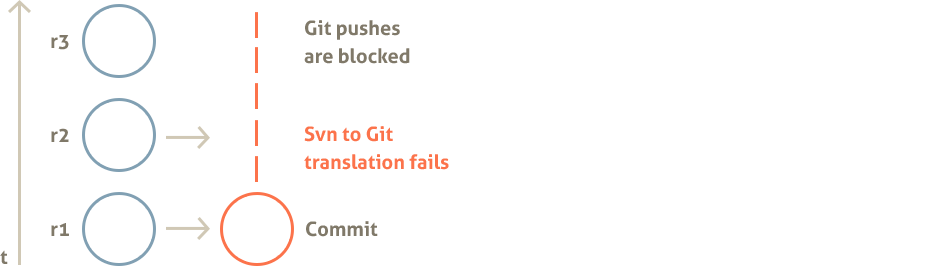
Figure 10.2. Auto mode: Git to Subversion translation fails. 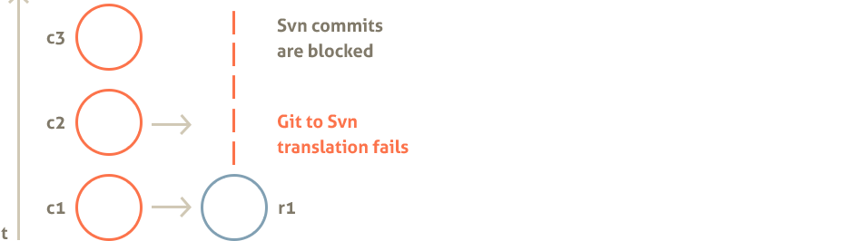
Users who will attempt to push or to commit changes via the side that is blocked, will not succeed and will receive an error message (for the case Git side is blocked as in Figure 10.1):
WARNING:
descriptive error message
CURRENT STATE:
Subversion: READ AND WRITE
Git : READ ONLY
TO RECOVER:
Run on the server:
subgit install /var/svn/repos
As it is said, to recover run subgit install svn_repository on the server side. It will translate not yet translated commits or revisions and will enable synchronization back.
Depending on the error message and on whether translation failures persist, it makes sense to check if there are something in the environment that causes those issues. Common reasons are:
- Service accounts misconfiguration (see Section 4.2, “Setup Service Accounts”)
- Multiple accounts being used, but SubGit
core.sharedoption is set to false (see Section 4.4. Adjust configuration, Enable shared access:) - Insufficient amount of memory available for the translation process
In case fixing the reason of the problem requires changing SubGit configuration, then change configuration first and run subgit install to restore synchronization when all necessary configuration options are set.
Svn or Git mode:
Sometimes it is desirable to always keep certain (either Subversion or Git) side unblocked, even when translation to that side have failed:
[core]
# commits to Subversion are never blocked:
failSafe = svn
Or:
[core]
# pushes to Git are never blocked:
failSafe = git
Following git or svn translation failure handling policy may naturally result in Subversion and Git histories to diverge (commit "c2" and revision "r2" represent diverged history on both figures):
Figure 10.3. History diverges in the svn mode 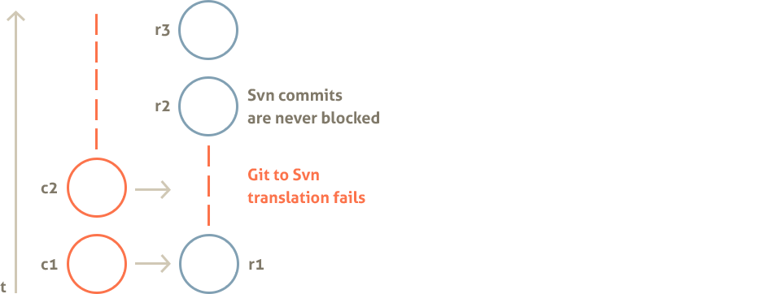
Figure 10.4. History diverges in the git mode 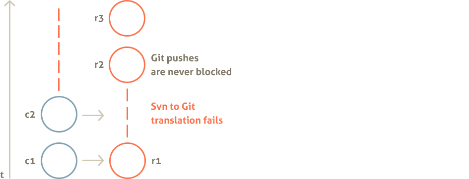
Compare above with how SubGit handles translation failures in the auto mode (Figure 10.1 and Figure 10.2). To recover from the case when history in Git and Subversion repositories had diverged, multi-step recovery procedure have to be performed. Commands and figures below assume single project Subversion repository at /var/svn/repos synchronized with a single Git repository at /var/svn/repos/.git with history diversion between Git master branch and Subversion trunk.
Figure 10.5. Diverged Subversion and Git histories on trunk and master branch
1) Create a backup Git repository.
# create clone of the original Git repository
$ git clone /var/svn/repos repos.backup
# track all remote branches on which there are untranslated commits
$ cd repos.backup
$ git checkout master
...
$ git checkout foo
2) Reset Git references to the pre-diversion state.
Branch and tag references to the last translated commits are stored in the refs/svn/root namespace of the original repository. Exact reference name in refs/svn/root depends on the branches and tags mapping configured for this Git repository (see Section 3.2, “Branches and Tags mapping”). Default correspondence is:
refs/svn/root/trunk => refs/heads/master
refs/svn/root/branches/* => refs/heads/*
refs/svn/root/shelves/* => refs/shelves/*
refs/svn/root/tags/* => refs/tags/*
Use git update-ref command to reset existing references:
# Reset master reference to point to the last translated commit.
$ cd /var/svn/repos
$ git update-ref refs/heads/master refs/svn/root/trunk
# In case diverged history includes changes on branches, special shelf branches
# and tags, then you may need to run commands like:
$ git update-ref refs/heads/branch refs/svn/root/branches/branch
$ git update-ref refs/shelves/bar refs/svn/root/shelves/bar
$ git update-ref refs/tags/1.0 refs/svn/root/tags/1.0
# In case diverged history includes creation of a new branch or tag, then
# it has to be deleted:
$ git branch -D missing
$ git tag -D missingTag
Figure 10.6. Master branch reset to the pre-diversion state 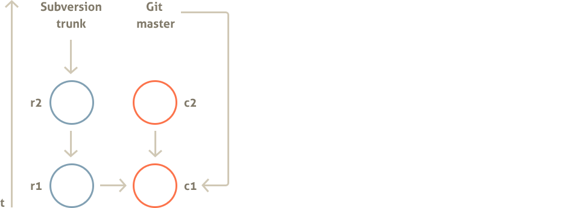
3) Enable SubGit synchronization.
# reset error state and enable synchronization back
$ subgit install /var/svn/repos
...
Subversion to Git mapping has been found:
<root> : /var/svn/repos/.git
Information on previously encountered errors is cleared.
...
INSTALLATION SUCCESSFULL
Figure 10.7. Outstanding Subversion revision synced to Git 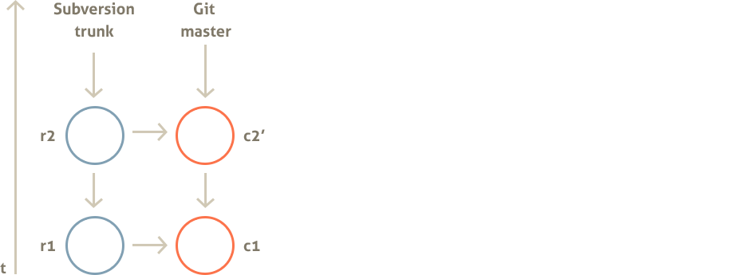
SubGit install command will translate all not yet translated Subversion revisions to Git commits, thus eliminating history diversion on Subversion side. Next step will merge in diverted Git history back into original repository thus translating it to Subversion.
4) Restore backed up commits.
# go to back up repository cloned at the first stage
$ cd repos.backup
# fetch pre-diversion state references
$ git fetch --all
$ git fetch --tags
# for each branch that has diverged commits do rebase or merge:
$ git checkout master
$ git rebase origin/master
OR
$ git merge origin/master
# push new state with commits restored back to the original repository:
$ git push --all
Figure 10.8. Diverged Git commit rebased and pushed back on to the master branch. 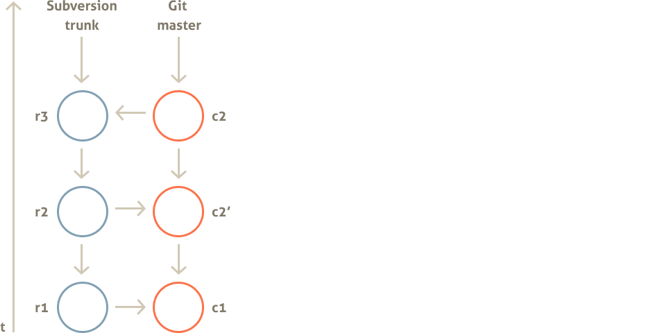
Chapter 11. System Requirements
SubGit will run on the most modern systems. Requirements for the server are:
- Windows XP or newer, Linux or OS X
- Oracle Java 1.5 or newer
- At least 256Mb*K + 32Mb*N of memory available, where N is the maximum number of concurrent commits or pushes, and K is the number of Subversion repositories.
Memory available consists of physical memory and swap, so memory requirement gives an idea of how much memory might be allocated by SubGit at peak time, it does not mean that server must have that much physical memory installed.
On SubGit processes:
At any single moment SubGit would run no more than N + 1 Java processes per repository, where N is a number of concurrent commits or pushes at that very moment. N processes are those started by SubGit hooks and additional process is a background translation process (daemon) that performs actual translation.
Each of the N Java processes (hooks) is run with the following options by default:
java -noverify -Xint -Djava.awt.headless=true
Background translation process default options are:
java -noverify -client -Djava.awt.headless=true
These options could be changed in the conf/subgit.conf file. For instance:
[hooks]
javaOptions = -noverify -Djava.awt.headless=true
[daemon]
javaOptions = -noverify -server -Djava.awt.headless=true
By default background translation process exits as soon as translation is over, but an idle timeout could be specified to let it run for longer time or to exit never. This may increase overall performance in case of the heavy commits or pushes traffic.
[daemon]
idleTimeout = 0|N|infinity
Default timeout is 0, i.e. background translation process exits as soon as translation is over and there are no more revisions or commits to translate. Timeout value is specified in seconds and infinity value means that process should never exit.
Run subgit install after changing conf/subgit.conf file for the changes to become effective.
Chapter 12. Installing SubGit Tool
Before installing SubGit into Subversion repository, subgit tool itself has to be installed on your server. Make sure your server meets SubGit system requirements (see Chapter 11) and follow instructions below on how to install SubGit tool.
On Debian-based or Ubuntu OS:
- Download SubGit debian package file from SubGit download page;
- Run
sudo dpkg -i subgit.debto install SubGit; - Run
sudo apt-get install -fto install missing dependencies, if there are any.
Now you may run subgit command from the command line. Test it by running subgit --version command. To upgrade SubGit tool, repeat above steps with the newer debian package file.
On Linux and OS X:
- If necessary, download and install most recent version of the Java SE JDK from the Java download page;
- Download SubGit zip archive file from SubGit download page;
- Acting as the
rootuser, unpack all files from SubGit archive into/opt/subgit/directory; - Append
/opt/subgit/binto the PATH variable, e.g. in the/etc/profilefile.
Now you may run subgit command from the command line. Test it by running subgit --version command. To upgrade SubGit tool, delete all files from the /opt/subgit directory and repeat above steps with the SubGit zip archive.
On Windows OS:
- If necessary, download and install most recent version of the Java SE JDK from the Java download page;
- Download SubGit zip archive file from SubGit download page;
- Acting as Administrator user, unpack all files from SubGit archive into
C:\Program Files\SubGitdirectory; - Append
C:\Program Files\SubGit\bindirectory to the system PATH variable in the Control Panel.
Now you may run subgit command from the command line. Test it by running subgit --version command. To upgrade SubGit tool, delete all files from the C:\Program Files\SubGit directory and repeat above steps with the SubGit zip archive.
Chapter 13. Common Server Setups
Sections below show how to install and use SubGit with the most common Subversion server configurations. Each section starts with a description of the existing configuration and proceeds to the step-by-step instructions on how to set up Subversion/Git replication with SubGit. These howtos assume that Git repositories are created at their default locations, i.e. inside Subversion repository.
13.1. Subversion and Git over HTTP(s)
Original configuration:
- Subversion repositories are located in the
/var/svn directory - Apache web server is installed and configured to provide access to those Subversion repositories
- Apache web server is run on behalf of www-data user
- Users access Subversion repositories at
http://host/svn/repositoryNameURLs
Goal:
- Create Git mirrors of Subversion repositories
- Extend Apache web server configuration to make it provide access to the Git repositories
Steps:
1) Install SubGit into all Subversion repositories:
Refer to Chapter 4, Installing SubGit into Repository for more details on how to install SubGit into repository.
$ sudo -u www-data subgit install /var/svn/repository
...
INSTALLATION SUCCESSFUL
...
Make sure that subgit install command is run on behalf of the Apache user, in that case www-data.
2) Install git-http-backend which is a part of Git 1.6.6 or newer
3) Add Git directives to the apache configuration file (added lines are shown with bold font):
<-- Password protected read and write Subversion repository access -->
<Location /svn>
DAV svn
SVNParentPath "/var/svn"
Require valid-user
AuthType Basic
AuthUserFile "/path/to/passwd"
</Location>
SetEnv GIT_PROJECT_ROOT /var/svn
SetEnv GIT_HTTP_EXPORT_ALL 1
ScriptAlias /git/ /usr/lib/git-core/git-http-backend/
<-- Password protected read and write Git repository access -->
<Location /git>
Require valid-user
AuthType Basic
AuthUserFile "/path/to/passwd"
</Location>
More configuration examples could be found at the git-http-backend documentation page.
4) Reload Apache configuration:
sudo /etc/init.d/apache2 reload
Users may now access Git repositories at:
- http(s)://host/git/repositoryName for a single-project Subversion repositories
- http(s)://host/git/repositoryName/git/project.git for a multi-project Subversion repositories
Users should use same credentials they are using to access Subversion repository.
13.2. Subversion over HTTP(s) and Git over SSH protocol
Original configuration:
- Subversion repositories are located in the
/var/svn directory - Apache web server is installed and configured to provide access to those Subversion repositories
- Apache web server is run on behalf of www-data user
- Users access Subversion repositories at
http://host/svn/repositoryNameURLs
Goal:
- Create Git mirrors of Subversion repositories
- Let users access Git repositories over SSH protocol on behalf of the git user
Steps:
1) Install SubGit into all Subversion repositories:
Refer to Chapter 4, Installing SubGit into Repository for more details on how to install SubGit into repository.
$ sudo -u www-data subgit configure /var/svn/repository
...
CONFIGURATION SUCCESSFUL
...
Edit repository/conf/subgit.conf file. In this configuration it is important to set SubGit core.shared option to true, because different users will access Subversion and Git repositories.
[core]
...
shared = true
...
Run subgit install to finish SubGit installation into repository:
$ sudo -u www-data subgit install /var/svn/repository
...
INSTALLATION SUCCESSFUL
...
Make sure that SubGit configure and install commands are ran on behalf of the Apache user, in that case www-data.
2) Create git user and set up users groups:
$ sudo useradd -d /home/git -m git
$ sudo usermod -G git www-data
$ sudo usermod -G www-data git
Now git and www-data users shares the same set of groups. See Section 4.2, “Setup Service Accounts” for more details on service users configuration.
4) Configure SSH access:
Add actual Git users SSH public keys to the /home/git/.ssh/authorized_keys file and ensure that sshd daemon is running. For security reasons you may like to look through the /etc/ssh/sshd_config file or its analogue on your system to check that key pair authentication is the only one enabled for the git user.
Users will be able to access Git repositories at:
- ssh://git@host/var/svn/repositoryName for a single-project Subversion repositories
- ssh://git@host/var/svn/git/project.git for a multi-project Subversion repositories
There is a good article describing how to set up SSH access for Git repository in more details.
Subversion repositories will remain available over HTTP(s) just as before at:
- http(s)://host/svn/repositoryName
13.3. SubGit with WANdisco uberSVN on Windows
Original configuration:
- uberSVN Subversion server is installed at
C:\Program Files\WANdisco\uberSvndirectory - Subversion repositories are located at their default location at
C:\Program Files\WANdisco\uberSVN\repositoriesdirectory - Users access Subversion repositories at
http(s)://host/repositoryNameURLs and use password based authentication
Goal:
- Create Git mirrors of Subversion repositories
- Let users access Git repositories over HTTP(s) protocol using the same credentials users use for Subversion
Steps:
1) Install SubGit into all Subversion repositories:
Run subgit install command as Administrator user.
C:> subgit install "C:\Program Files\WANdisco\uberSVN\repositories\repository"
...
INSTALLATION SUCCESSFUL
...
2) Get portable Git
As Administrator:
- Download portable Git edition from msysGit download page
- Unpack downloaded archive into
C:\Program Files\WANdisco\uberSVN\data\msysgitdirectory - Copy all files from the bin directory to the
lib-exec/git-coredirectory
3) Extend Apache configuration
As Administrator, create new C:\Program Files\WANdisco\uberSVN\conf\conf.d\88-subgit.conf configuration file:
LoadModule cgi_module modules/mod_cgi.so
LoadModule env_module modules/mod_env.so
LoadModule authz_user_module modules/mod_authz_user.so
SetEnv GIT_PROJECT_ROOT "C:/Program Files/WANdisco/uberSvn/repositories"
SetEnv GIT_HTTP_EXPORT_ALL 1
ScriptAlias /git/ "data/msysgit/libexec/git-core/git-http-backend.exe/"
<Location /git>
Options +ExecCGI
Require valid-user
AuthName "UberSVN Git Server"
AuthType Basic
AuthBasicProvider file
AuthUserFile "conf/svn.passwd"
Order allow,deny
Allow from all
</Location>
3) Restart WANdisco Apache service
In the Services section of the Windows Control Panel, ensure that WANdisco Apache service is run on behalf of Administrator user and restart this service.
Users will be able to access Git repositories at:
- http(s)://host:port/git/repositoryName for a single-project Subversion repositories
- http(s)://host:port/git/repositoryName/git/project.git for a multi-project Subversion repositories
Git users should use same credentials they are using to access Subversion repository.
Subversion repositories will remain available over HTTP(s) just as before at:
- http(s)://host:port/repositoryName
Chapter 14. Useful Links and Contacts
Please feel free to contact us at support@subgit.com. We'd be glad to address issues you may have with SubGit or to provide more information on how one may get most out of SubGit. We appreciate your feedback!
The following links would be of use if you would like to report an issue or to talk to SubGit developers on SubGit features:
- SubGit issues tracker: http://issues.tmatesoft.com/issues/SGT/
- SubGit mailing list: send email to subgit-users-subscribe@subgit.com to subscribe
Follow @subgit twitter account or SubGit page on Google+ to stay up-to-date with SubGit development.